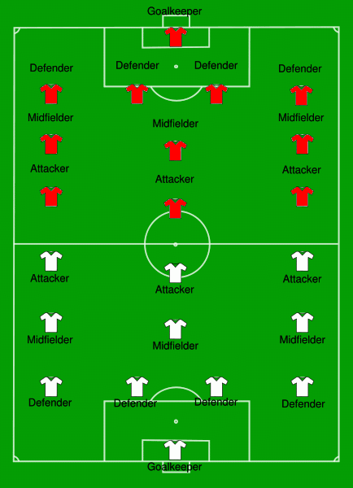

SOCCER
Go to the BottomSoccer or what other people also call football, is one of the most popular sports in Europe, Brazil, and Mexico. It is a fast-paced, strategy game played by people of all ages, men, women, and kids. Its professional leagues have gained millions of fans around the world. Soccer is also considered as a major sport that is well-known and widely played in almost all regions of the world.

The game is played by two teams, with eleven people on each team (including the goalie). The goal of the game is to kick, or head the ball into the net, touching the ball with your hand or arms is not allowed (unless it was an accident). This is a sport that requires teamwork with your team.
A professional soccer game is 90 minutes long. It is split into two halves, 45-minute games and there is a break in between (usually around 15 minutes). The referee can add any additional minutes of play because of stoppages and injuries in between the game.
Back to the Top